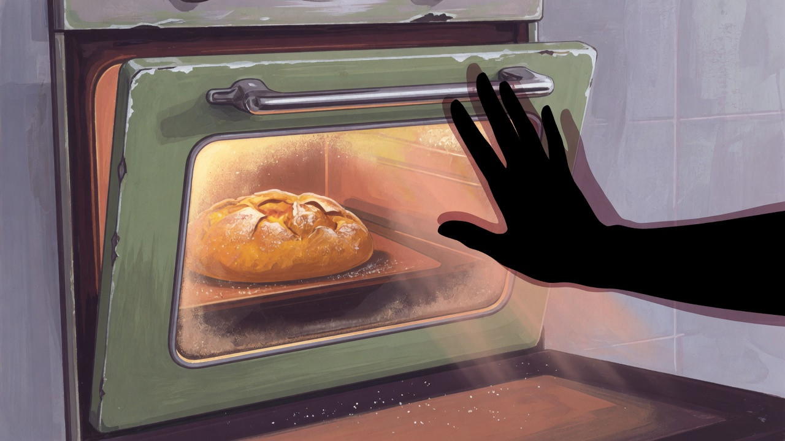
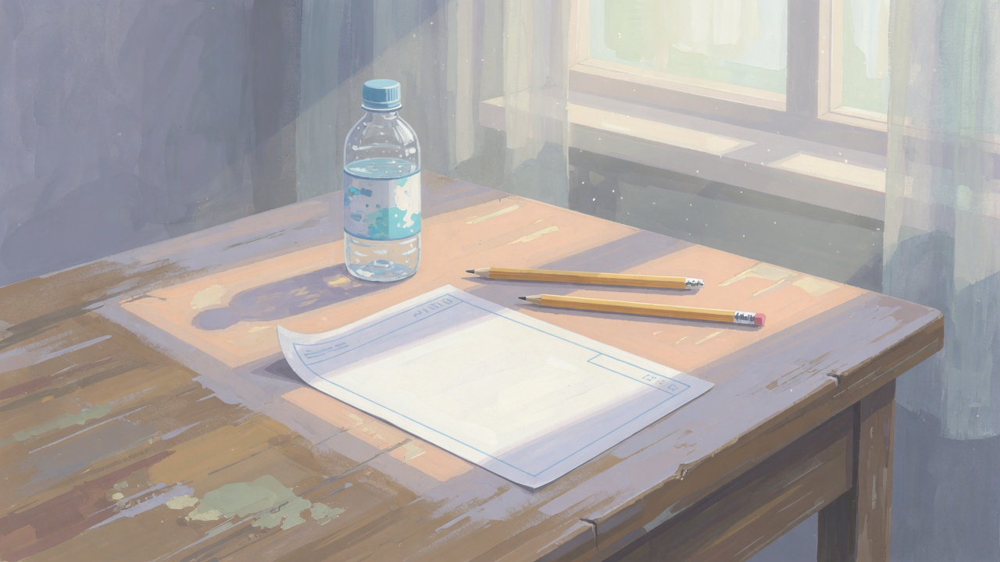

합격 다음 날, 바로 시작하지 않은 이유
2025년 5월 합격 직후, '이제 밤식빵이다!'라고 바로 달려들지 않았습니다. 시험용 손가락 감각과, 기억 속 맛을 쫓는 감각이 같은 손이어도 질문이 달랐기 때문입니다. 시험에서는 규격과 시간, R&D에서는 향·식감·가족 반응이 기준이었습니다.
이 글은 시리즈 6편, 마지막입니다. 기능사 준비 이야기를 마치고, 지금 이 블로그에서 계속하는 빵 연구로 어떻게 넘어갔는지 적습니다.
시험 반죽 vs 연구 반죽
차이를 표로 정리하면 이렇습니다.
- 목표: 시험 — 규격·시간 / R&D — 맛·식감·재현성
- 변수: 시험 — 최소화 / R&D — 의도적으로 하나씩 변경
- 실패: 시험 — 감점 / R&D — 기록 가치 있음
- 기록: 시험 — 속도·편차 / R&D — 향·촉촉함·다음 가설
합격 후 첫 달은 시험 품목 연습을 완전히 끊지 않고 주 1회만 유지했습니다. 손을 놓으면 기본기가 무너지는 느낌이 있었고, R&D에서도 반죽·발효 기본은 필요했습니다. 다만 시간 재기 연습은 줄였습니다.
R&D 일지 포맷 — 매 실험마다 같은 질문
빵 R&D 일지 글은 아래 순서를 고정합니다.
- 만들려던 빵 / 목표 — 한 문장
- 실패 1~3 — 눈에 보이는 현상
- 원인 추정 — 추정과 확인 구분
- 바꾼 변수 하나
- 다음 시도
이 포맷은 기능사 준비 때 쓰던 반죽 메모를 확장한 것입니다. 3편에서 '바꾼 변수는 하나'라고 적었던 원칙이 그대로입니다. 일지를 쓰기 전에 맛을 평가하는 시간을 10분 두었습니다. 뜨거울 때와 식었을 때, 다음 날 아침까지 — 밤식빵은 특히 다음 날 식감이 기준이었습니다.
첫 R&D 메모는 날짜 한 줄과 실패 세 가지 bullet뿐이었습니다. 사진은 나중에 붙였습니다. 글을 쓰기 전에도 같은 양식으로 두 달치를 쌓아 두니, 블로그로 옮길 때 순서가 흐트러지지 않았습니다.
밤식빵 프로젝트 — 시리즈가 향한 곳
1편에서 나온 어릴 적 동네 빵집의 밤식빵이 대표 프로젝트입니다. 기능사 과정에서 익힌 식빵 반죽을 바탕으로, 밤 토핑·시럽·굽기 전후 처리를 바꿔 가고 있습니다. 아직 '완성'이라고 말하지 않습니다. 가족이 '비슷하다'고 한 적은 있지만, 제 기억과 완전히 겹치지는 않았습니다.

R&D 일지는 밤식빵 프로젝트 안내에서 순서대로 읽을 수 있고, 1차 시도부터 시작합니다. 시리즈를 읽으신 분이 R&D로 넘어가기 좋은 순서입니다.
시험용 식빵 반죽으로 밤식빵을 만들 때, 토핑을 올리는 순간 '시험에서 배운 봉합'과 '기억 속 모양'이 충돌했습니다. 시험에서는 균일한 높이가 점수였고, 기억 속 빵은 윗면이 조금 울퉁불퉁했습니다. 그 차이를 글로 남기기로 했습니다.
주간 연구 리듬 — 매일 구우지 않기
합격 후 매일 빵을 굽지 않았습니다. 주 2~3회 실험, 나머지는 메모 정리·시장에서 재료 비교·이전 단면 사진 복기였습니다. 매일 구우면 '오늘 뭐가 달랐지?'가 흐려졌습니다. 간격을 두면 차이가 선명해졌습니다.
실험 없는 날에도 주방 온도·습도를 메모해 두었습니다. 여름과 겨울에 같은 반죽이 다르게 나온다는 3편 실기 메모가 R&D에서도 그대로 적용됐습니다. 날씨도 변수입니다.
기록에 남기는 원칙
이 블로그에는 제가 직접 구운 날만 본문에 넣습니다. 기능사·시험 이야기는 2024~2025년에 제가 경험한 범위 안에서만 씁니다. R&D에서는 추정과 확인을 섞지 않고, 수치·재료가 바뀌면 수정일을 함께 적습니다.
남의 레시피나 합격 후기를 요약해 붙이지 않습니다. 대신 제 반죽 메모·실패 사진·가족 반응을 근거로 삼습니다. '이 레시피로 반드시 성공' 같은 말도 하지 않습니다. 빵은 날씨·재료·오븐에 따라 달라지고, 저도 아직 밤식빵을 완성하지 못했기 때문입니다.
소개 페이지에 적어 둔 편집 원칙과 같은 방향입니다. 읽는 분이 제 주방에서 옆에 서 있는 느낌이 들도록, 과장 없이 쓰는 것이 목표입니다.
연구에 쓰는 도구와 기록 습관
R&D에서도 기능사 때와 같은 도구를 씁니다. 저울, 오븐 온도계, 타이머. 추가로 단면 사진과 다음 날 아침 식감 메모가 있습니다. 밤식빵은 식은 뒤·다음 날이 기준이라, 당일만 평가하면 잘못된 결론을 내기 쉽습니다.

노트 앱보다 종이 메모를 썼습니다. 주방에서 손이 젖은 채로 키보드를 쓰기 어렵고, 메모 한 장을 냉장고에 붙여 두면 가족이 '이건 실험 빵'이라는 것을 알 수 있었습니다. 작은 일이지만 실험 빵과 일상 빵을 섞지 않게 해 줬습니다.
합격 후 하지 않기로 한 것
- SNS 레시피를 하루에 여러 개 바꿔 가며 시도
- '완성' 선언 후 기록 중단
- 실패를 지우고 성공 사진만 남기기
- 기능사와 무관한 트렌드 빵을 R&D 이름으로 포장하기
저는 느리더라도 같은 프로젝트를 길게 가는 쪽을 택했습니다. 밤식빵이 첫 프로젝트입니다.
6편 시리즈를 마치며 — 다음은 일지
1편에서 밤식빵 한 조각 이야기로 시작해, 2편 일정, 3·4편 실기·필기, 5편 시험 당일, 6편 R&D 연결까지 적었습니다. 처음 읽는 분은 목차 글부터 보셔도 됩니다.
앞으로 이 블로그의 신규 글 비중은 빵 R&D 일지가 큽니다. 기능사 시리즈는 필요 시 수정·보완만 하고, 새 회차 시험 정보는 공식 공고를 따릅니다. 저는 2025년 5월 합격자로서 그 이후의 연구만 계속 갱신합니다.
시리즈를 끝까지 읽으신 분께
1편 동기에서 시작해 5편 합격까지 오셨다면, 이제 빵 R&D 일지 카테고리로 넘어가시면 됩니다. 기능사가 꼭 필요하지 않은 분도, '변수 하나씩 실험하고 기록하기' 방식은 참고할 수 있습니다.
실전 적용 노트
기능사 합격 후에도 주 1회는 기본 반죽만이라도 유지했습니다. 완전히 끊으면 R&D에서 기본이 흔들리는 느낌이 있었습니다. R&D 일지는 사진 2장(단면·전체)과 메모 5줄이면 발행 가능한 초안이 됩니다. 완벽한 글을 기다리기보다 기록부터 쌓았습니다.
시리즈 6편을 마칩니다. 읽어 주셔서 감사합니다. 다음 글부터는 카테고리가 빵 R&D 일지이며, 밤식빵 2차 실험도 같은 포맷으로 이어집니다.
정리하며
퇴사 → 기능사 → 빵 연구로 이어지는 길을 6편에 담았습니다. 밤식빵은 아직 진행 중입니다. 기능사를 준비하는 분께는 시리즈가 일정표가 되길, 이미 합격하신 분께는 R&D 일지가 실험 노트가 되길 바랍니다. 시리즈 전체 목차는 안내 글에서 한눈에 볼 수 있습니다. 질문·다른 경험은 문의로 남겨 주세요. 확인 후 수정일과 함께 반영합니다.
초보자가 자주 실수하는 포인트
- 합격 직후 시험 연습과 R&D를 같은 기준으로 평가하기
- 실패 기록 없이 성공만 남기기
- 여러 변수를 동시에 바꿔 원인을 알 수 없게 만들기
- 밤식빵처럼 장기 프로젝트를 조기에 '완성'으로 닫기
체크리스트
- R&D 일지 포맷 5단계 적용해 보기
- 시험용·연구용 목표를 한 줄씩 구분해 적기
- 첫 R&D 글(밤식빵 1차) 읽기
- 수정·오류 시 문의 또는 수정일 갱신
자주 묻는 질문
- 기능사 없이 R&D 일지만 봐도 되나요?
- 됩니다. 실험·기록 방식은 기능사와 무관하게 참고할 수 있습니다. 시험 일정이 궁금하시면 시리즈 1~5편을 보시면 됩니다.
- 밤식빵 레시피는 언제 공개하나요?
- 완성 레시피 한 방보다, 시도·실패·수정 과정을 일지로 남깁니다. 재현 가능한 단계가 모이면 그때 정리합니다.
이 글은 운영자의 직접 경험을 바탕으로 작성되었으며, 오븐·재료·환경에 따라 결과는 달라질 수 있습니다. 식품 위생·알레르기 등 건강 관련 판단을 대체하지 않습니다.